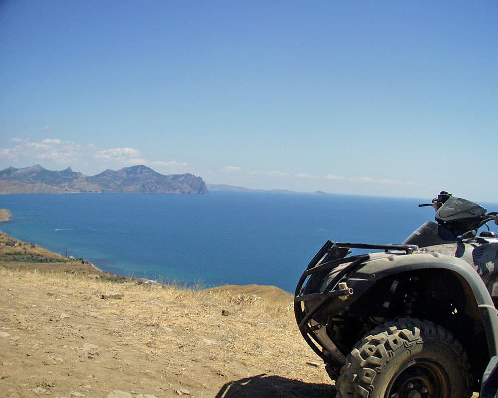

Включив в свою программу активного отдыха на квадроциклах посещение мыса Толстый, находясь за рулем квадроцикла Вы посетите бархатные холмы девственной природы Капсельской долины, горную местность мыса Толстый, а также посетите два озера. Крутые спуски и подъемы по скалистой местности, а также посещение сформированных веками вулканических пород глобальных форм посередине равнин оставит в Вашей памяти массу положительных моментов от данной экскурсии на квадроцикле.
Во время поездки на квадроцикле вы следуете по маршруту за экскурсоводом который всегда поможет в затруднительной для Вас ситуации, не даст заблудиться и всегда расскажет о тех достопримечательных местах где проходит маршрут. Во время катания делаются короткие остановки, дабы дать Вам возможность перевести дух и полюбоваться окружающими красотами.
С целью Вашей безопасности во время прогулки на квадроцикле, а также повышения Вашей самооценки мы предлагаем Вам только новые, только топовые квадроциклы марки Хонда мощностью 40 лошадиных сил, в которых воплощены самые инновационные идеи в индустрии производства квадроциклов.
Бухта Капсель — уникальный памятник природы. Обширная котловина начинается сразу за мысом Алчак, береговая тропа идет вдоль берега моря.
Современные очертания Капсель приобрела еще 50-100 тысяч лет назад, свидетель этому - карангатская морская терраса. Над Капселем возвышается хребет Токлук. От него к морю спускаются балки, овраги и наклонные поверхности балочных - «Судакских» террас. На них обнаружено несколько стоянок человека эпохи бронзы.
От Судака на восток – отделенный от него холмистой грядой многокилометровый пляж урочища Капсель, на мысах чуть поуже, в устьях балок чуть пошире. Море здесь очень мелководное и спокойное. В бухте навсегда остался волжский пароход "Ласточка", известность которому в свое время принес фильм "Жестокий романс". Сейчас пароход является плавучей гостиницей.
Капсельская долина. Находится между мысом Алчак и Меганомом. В Капсельской долине открыты стоянки эпохи бронзы, относящиеся ко II тыс. до н.э. Обнаружено более 90 дольменов - каменных ящиков. Здесь найдены шесть огромных менгиров - грубо отесанных каменных столбов высотой 2,8-3 м, поставленных вертикально, которые имели культовое назначение. О Капсельской долине в 1825 г. А.С. Грибоедов писал: "Скучные места, без зелени, без населения, солонец, истресканный палящим солнцем, местами полынь растет, таким образом до Козской долины, где природа щедрее и разнообразнее". Сегодня некогда пустынное урочище активно застраивается дачами.
Хорошо просматривается с вершины горы Ай-Георгий, Капсельская долина, вышла из моря только в четвертичный период, начавшийся около миллиона лет назад. В Капсельской долине открыты стоянки и поселения эпохи бронзы. Обнаружено более 90 дольменов - каменных ящиков. В них тавры хоронили своих покойников. Здесь найдены шесть огромных менгеров - грубо отёсанных каменных столбов высотой 2,8-3 м., поставленных вертикально. Стольбы имели культовое назначение. Здесь встречается редкий вид одичалого кактуса - стелющаяся опунция.
